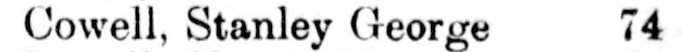

Stanley George Cowell 1893 - 1984
[ Home ] | [ Calendar ] | [ Surnames Index ] | [ Family History ]A cutter's pupil and textile warehouse salesman and the son of Benjamin Cowell (a woolen warehouse foreman) and Agnes Jacobs, Stanley Cowell, the third cousin twice-removed on the mother's side of <a href="I1.html">Nigel Horne</a>, was born in Chatham, Kent, England on Jan 8, 1893<span class="citation">1,2,3</span> and. He was married twice - to Mercia Bishop (on Jun 6, 1925 in Medway, Kent, England) Beryl Mold (<i>c.</i> Aug 1963 in Croydon, Surrey, England, following the death of Mercia Florence Isabel on Jul 11, 1961)<span class="citation">6</span>. He has 1 surviving child with Mercia Bishop, Judith F M.</p><p>Throughout his life, Stanley lived in several places: at 5 Hope Street in Chatham on Mar 31, 1901<span class="citation">1</span>; on 157 Glencoe Road in Chatham on Apr 2, 1911<span class="citation">8</span>; on 74 Burnt Ash Road, Lewisham, London, England in 1929<span class="citation">7</span>; on 37 Felhampton Road, Woolwich, London on Sep 29, 1939<span class="citation">2</span>; and on Elliott House, 22 Reculver Road, Beltinge, Kent in 1983. <p>He died on Jan 1, 1984 in Canterbury, Kent<span class="citation">4,5</span>.
Parents
- Benjamin William was born c. Nov 1858
- Agnes Sarah was born in 1860
Citations
- 1901 England, Wales & Scotland Census - Findmypast (was age 8 and the son of the head of the household)
- 1939 Register - Findmypast (was the head of the household)
- England & Wales deaths 1837-2007 - Findmypast
- England & Wales Government Probate Death Index 1858-2019 - Findmypast
- England & Wales, National Probate Calendar (Index of Wills and Administrations),1861-1941 Online publication - Provo, UT, USA: Ancestry.com Operations Inc, 2010.Original data - Principal Probate Registry. Calendar of the Grants of Probate and Letters of Administration made in the Probate Registries of the High Court of Justice in England. Londo
- England & Wales marriages 1837-2008 - Findmypast
- 1929 Electoral Register
- 1911 Census for England & Wales - Findmypast (was age 18 and the son of the head of the household)
Media
Stanley Cowell - probate

1929 Electoral Register

England & Wales deaths 1837-2007 - BMD/D/1984/1/74258874
England & Wales marriages 1837-2008 - BMD/M/1925/2/AZ/000248/066
England & Wales births 1837-2006 - BMD/B/1893/1/AZ/000132/078
1901 England, Wales & Scotland Census - GBC/1901/0005768567
1911 Census for England & Wales - GBC/1911/RG14/03922/0599/6
1939 Register Transcription - TNA-R39-0656-0656H-009-25
England & Wales marriages 1837-2008 Transcription - BMD-M-1963-3-AZ-000260-079
England & Wales Government Probate Death Index 1858-2019 - GBOR/GOVPROBATE/C/1984-1984/00052341
Family Tree

Generated by Ged2Site. Last updated on Jul 20, 2025